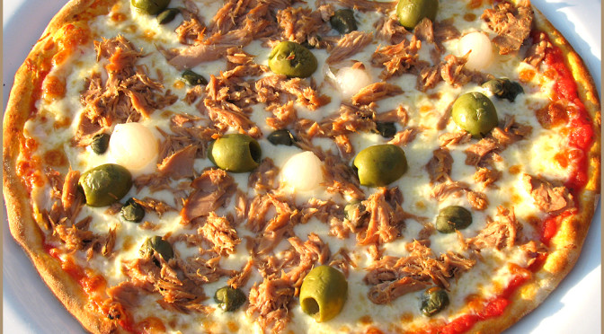

Pizza Recipe
Tuna and Olive Pizza

Delicious and crispy tuna pizza with whole green and black olives. Collect your ingredients and follow the recipe to create this hand streched, golden, crispy, and authentic italian dish. Fresh tomatoes and anchovies in the sauce will really bring out the flavour.
Ingredients
For the dough:
- 160ml of water
- 235g of strong white flour
- 1 tablespoon of extra virgin olive oil
- 1 and a half teaspoons of salt
- 1 tablespoon of dry yeast
For the toppings:
- 200ml of passata
- 1 teaspoon of dry basil
- 6 vine tomatoes
- 250g of mozzarella, well-drained
- 2 tins of tuna in sunflower oil, very well-drained
- 1 tin of anchovies in sunflower oil, very well-drained
- 30g of mixed pitted olives
Steps
Making the dough:
- Add all the ingredients in the bread maker in the order recommended by the manufacturer and run the "dough" cycle. Some machines have a dedicated "pizza" setting. If yours has it, use that instead.
- Alternatively, make the dough by hand by adding all the dry ingredients in a bowl, mix them well, and gradually add the olive oil and water until you have a dough that's now sticky. Leave it to prove for 1 - 1 ½ hours.
Creating the pizza:
- Heat the oven at 230c
- Mix the passata with the dry basil, dice 3 of the vine tomatoes and drained achovies, add a pinch of salt and black pepper and mix together
- Roll the dough as thin as possible without tearing it, flour the working area or use cornmeal to stop the dough sticking to the work area
- Place the base onto a baking tray or pizza tray
- Spread the sauce onto the pizza, leave around 2cm of crust around the edge
- Crumble the drained tuna over the sauce, evenly spread chopped olives over the pizza. Hand tear the mozzarella and evenly place it over the pizza. To avoid toppings falling off once cooked avoid loading the pizza too heavily in the centre.
- Bake for 20 minutes and 230c or until the cheese has melted and the base is crisp
- Slice as desired and enjoy!